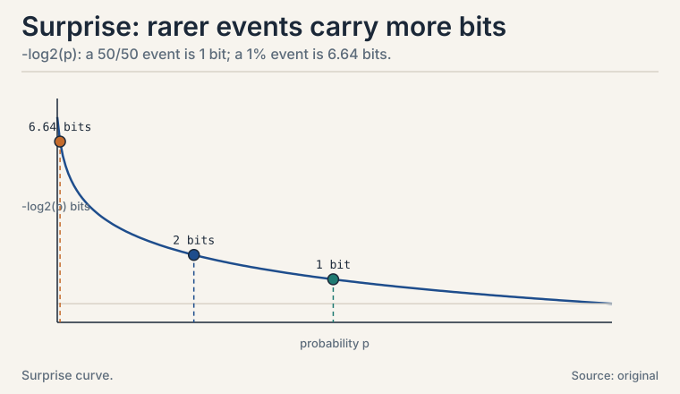
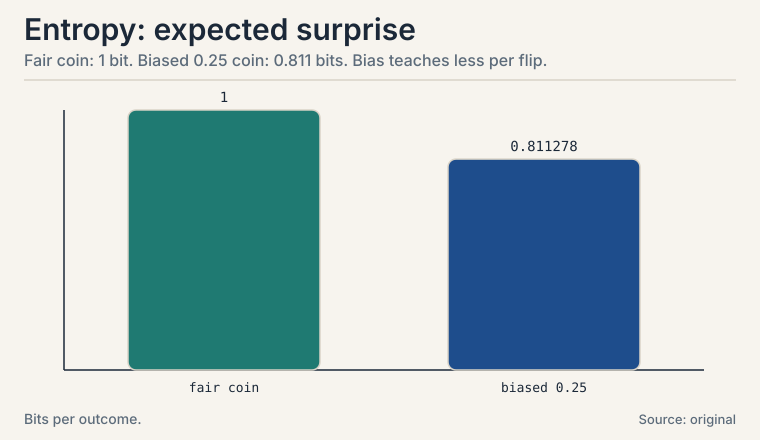
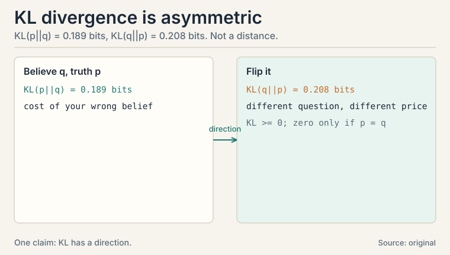
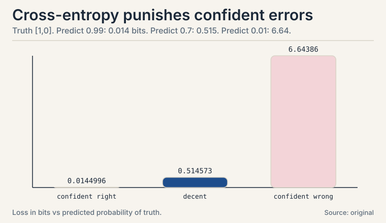
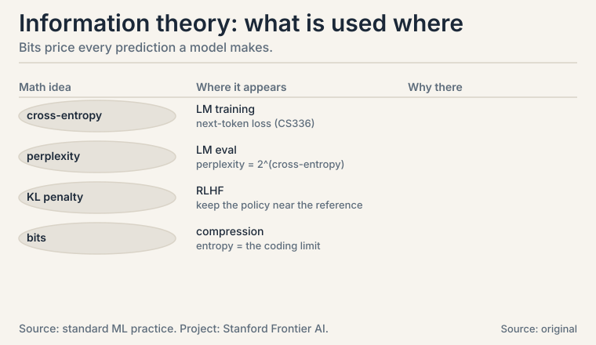

Lecture 10: Information Theory Basics
Video blocked (ad-blocker or local file mode).
Watch on YouTubeVideo not loading? Watch on YouTube
External explainer (no NPTEL lecture covers information theory): entropy from zero, with the physical analogy.
[uncertain] A supplement beyond the playlist
The playlist has no dedicated information theory lecture: its probability block (L48-L53) stops at joint distributions and covariance. This lesson is a synthesis from standard references, marked [uncertain] throughout. It earns its place because one quantity, cross-entropy, is the loss function of logistic regression (L08), softmax classifiers, and every language model in this system (CS229 L08, CS336). You cannot read ML without it.
The task: price a prediction in bits
A model predicts the next word. How do you score the prediction? “Right or wrong” is too coarse: a model that assigned 49% to the right word is better than one that assigned 1%. You need a score that rewards good probabilities, not just good guesses.
Information theory prices uncertainty in bits. One bit is the information in the answer to one yes/no question. The core idea: surprising events carry more information than expected ones. A fair coin flip tells you 1 bit. A double-headed coin flip tells you 0 bits: you knew the answer.
Subchapter: surprise
Define the surprise of an event with probability p as -log2(p). A fair coin’s heads: -log2(0.5) = 1 bit. A 1-in-1024 event: 10 bits. An impossible event would be infinitely surprising, which is why models must never assign probability exactly zero to anything possible.
Why the logarithm? Because information should add: two independent 1-bit events carry 2 bits, and log(p1 * p2) = log(p1) + log(p2). The log turns “and” into “plus.” Base 2 sets the unit: one yes/no question.

Subchapter: entropy, the expected surprise
Entropy is the expected surprise: the average bits per outcome.
H(X) = -sum of p(x) * log2 p(x) fair coin: H = -(0.5*log2 0.5 + 0.5*log2 0.5) = -(-0.5 - 0.5) = 1 bit
A biased coin, p(heads) = 0.25, worked by hand:
log2 0.25 = -2, log2 0.75 = -0.415 H = -(0.25 * -2 + 0.75 * -0.415) = -(-0.5 - 0.311) = 0.811 bits
Less than 1 bit: the bias makes outcomes more predictable, so each flip teaches you less. Entropy is maximized by the uniform distribution and minimized (zero) by certainty. It measures how much you do not know.
The uniform-maximum fact has teeth: among all distributions with the same support, the uniform one is the hardest to predict. This is the maximum entropy principle: when you know nothing, the honest prior is uniform. L05’s priors inherit this logic.

KL divergence: the price of the wrong distribution
You believe the coin is fair: q = [0.5, 0.5]. It is actually biased: p = [0.25, 0.75]. How much does your wrong belief cost? The KL divergence measures the extra bits you pay for coding data from p with q’s expectations:
KL(p || q) = sum of p(x) * log2(p(x) / q(x)) p = [0.25, 0.75], q = [0.5, 0.5]: KL = 0.25 * log2(0.25/0.5) + 0.75 * log2(0.75/0.5) = 0.25 * (-1) + 0.75 * 0.585 = -0.25 + 0.439 = 0.189 bits
Your wrong model costs 0.189 extra bits per flip.
Subchapter: the asymmetry
Two properties matter. First, KL >= 0 always, and KL = 0 only when p = q: you cannot beat the truth. Second, it is not symmetric: KL(p||q) != KL(q||p). Flip the arguments: KL(q||p) = 0.5 * log2(0.5/0.25) + 0.5 * log2(0.5/0.75) = 0.5 - 0.292 = 0.208 bits. Different question, different price: 0.189 vs 0.208. KL measures “wrongness of q when the world is p”, direction included. Treating it as a distance is the classic mistake.

Cross-entropy: the loss function
Cross-entropy is entropy plus the KL price:
H(p, q) = H(p) + KL(p || q) = -sum of p(x) * log2 q(x)
Read it: the true distribution is p, you predict q, and you pay the average surprise of your predictions on real data. In classification, p is the one-hot truth ([1, 0] for “cat”) and q is the model’s probabilities ([0.7, 0.3]):
loss = -(1 * log2 0.7 + 0 * log2 0.3) = -log2 0.7 = 0.515 bits
Subchapter: the punishment curve
Confident and right ([0.99, 0.01]): -log2 0.99 = 0.014 bits. Confident and wrong ([0.01, 0.99]): -log2 0.01 = 6.64 bits. The loss explodes for confident errors: that is the behavior you want in a loss. This is exactly L08’s logistic loss, now in bits. Every softmax classifier and every language model minimizes cross-entropy between the true next token and the predicted distribution (CS336, CS229 L08).
Why not just use accuracy? Because accuracy is blind to confidence: 49% and 1% on the right answer both count as “wrong.” Cross-entropy rewards the 49%: it prices the probabilities, not the argmax. Training on accuracy would give no gradient for “almost right”: the loss must be smooth in the probabilities.

Subchapter: perplexity, the LM score
Language models report perplexity: 2^(cross-entropy). A model with cross-entropy 3 bits has perplexity 8: it is as confused as if it chose uniformly among 8 words at each step. Lower is better. Perplexity translates the abstract bit-bill into “how many options the model hesitates between.” A perplexity of 20 on open text is strong. 200 is weak. Same loss, human-readable scale.
Where it breaks: zero probabilities and infinite bills
If q assigns 0 to an event that occurs, -log2(0) is infinite: one impossible prediction bankrupts the whole average. Real systems defend with smoothing: mix a little uniform distribution into q so no probability hits exactly zero. Laplace smoothing in naive Bayes (CS229 L05) is this defense. The second crack: cross-entropy only cares about the probability assigned to the true class. A model can be perfectly calibrated on truth-class probabilities and wild elsewhere. Calibration metrics exist to catch that.
| Idea | Formula | Meaning |
|---|---|---|
| Surprise | -log2 p | bits in one outcome; rarer = more bits |
| Entropy | -sum p log2 p | expected surprise; fair coin = 1, biased 0.25-coin = 0.811 |
| KL divergence | sum p log2(p/q) | extra bits for believing q when truth is p; toy: 0.189 vs 0.208 |
| Cross-entropy | -sum p log2 q | the loss: truth p, prediction q; confident-wrong = 6.64 bits |
| Perplexity | 2^(cross-entropy) | effective number of options the model hesitates between |
| Smoothing | mix in uniform | never let q hit exactly zero |
What is used where: the real systems
| Math idea | Where it appears | Why there |
|---|---|---|
| Cross-entropy | LM training (CS336) | next-token loss on every batch |
| Perplexity | LM evaluation | 2^CE: the standard reported number |
| KL penalty | RLHF | keep the policy near the reference model |
| Bits | Compression | entropy is the coding limit (Shannon) |
| Smoothing | Naive Bayes, LM outputs | Laplace: no exact zeros |

The average surprise per outcome, in bits. A fair coin has entropy 1: each flip teaches you one bit. A coin with p(heads) = 0.25 has entropy 0.811: the bias makes flips more predictable, so each teaches less. Entropy is highest for uniform distributions and zero when the outcome is certain. It measures how much you do not know. Because the unit is the bit: one yes/no question. log2(0.5) = -1, so a 50/50 event carries exactly 1 bit. Natural log gives nats, base 10 gives dits: same idea, different ruler. ML uses nats (natural log) in code and bits in explanations. The math is identical up to a constant.
Truth p = [0.25, 0.75], belief q = [0.5, 0.5]. KL = 0.25 * log2(0.25/0.5) + 0.75 * log2(0.75/0.5) = 0.25 * (-1) + 0.75 * 0.585 = -0.25 + 0.439 = 0.189 bits. Each term: the true probability times the log-ratio of true to believed. Positive ratios (you underrated) add cost. Negative ratios (you overrated) subtract, but the total never goes below zero. 0.5 * log2(0.5/0.25) + 0.5 * log2(0.5/0.75) = 0.5 * 1 + 0.5 * (-0.585) = 0.208 bits. Different: 0.189 vs 0.208. The direction matters because the weighting distribution changed: the first averages the log-ratio under p, the second under q.
Because it prices the model’s predicted probabilities on real data: -sum of p log q. Truth [1, 0], prediction [0.7, 0.3]: loss 0.515 bits. Prediction [0.01, 0.99]: loss 6.64 bits. Confident wrong answers pay explosively, which is exactly the incentive you want. Minimizing cross-entropy is minimizing KL(p||q), since H(p) is constant: it drives the model’s distribution toward the truth. Cross-entropy = entropy of truth + KL divergence: H(p,q) = H(p) + KL(p||q). Since H(p) does not depend on the model, minimizing one minimizes the other. KL isolates the model’s wrongness (0.189 bits in the coin toy). Cross-entropy is the total bill including irreducible uncertainty.
No. It is nonnegative and zero only when the distributions match, which tempts the word “distance”, but it is not symmetric: KL(p||q) = 0.189 differs from KL(q||p) = 0.208. It has a direction: “cost of believing q when the world is p”. Symmetric versions exist (Jensen-Shannon), but plain KL’s asymmetry is a feature: in variational inference the direction you choose changes the answer. Infinite loss: -log2(0) is undefined. One impossible prediction bankrupts the average. Defend with smoothing: mix a small uniform component into q. This is why naive Bayes uses Laplace smoothing and why softmax never outputs exact zeros.
Perplexity is 2^(cross-entropy in bits): the effective number of options the model hesitates between. Perplexity 20 means the model’s uncertainty equals choosing uniformly among 20 words at each step. It translates the bit-bill into a human scale: lower is better, 1.0 is perfect, vocabulary size is random guessing. No, not directly. Perplexity is per-token, and different tokenizers split text into different numbers of tokens. Finer tokenization inflates the token count and usually lowers per-token perplexity artificially. Compare in bits per character or per byte instead: tokenizer-independent.
As the leash. RLHF optimizes a reward model, but unconstrained optimization drifts the policy into gibberish that games the reward. The fix: penalize KL(policy || reference) in the objective, keeping the tuned model near the original. The KL price from this lesson becomes a regularization term: reward minus beta times KL. Beta is the leash length. Direction chooses the failure mode. KL(policy || reference) punishes the policy for putting mass where the reference has none: it keeps the policy inside the reference’s support (mode-seeking). The reverse would punish the policy for missing the reference’s mass (mode-covering). For safety you want the first: no wandering off the known-good map.
Calibration. Cross-entropy only rewards the probability on the true class. A model can minimize it while being systematically overconfident elsewhere. Diagnose with a reliability diagram: bin predictions by confidence, plot accuracy per bin. Points below the diagonal mean overconfidence. Fix: temperature scaling (one parameter, fitted on validation) or isotonic regression. The loss trained the ranking. Calibration fixes the numbers. It divides all logits by a single T before softmax: T > 1 softens, T < 1 sharpens. One parameter cannot change the ranking (accuracy stays), but it rescales confidence to match observed accuracy. It is the cheapest calibration fix because miscalibration is usually a global scale error.
Recap: the whole lesson on one screen
- The task. Score predicted probabilities, not just right/wrong guesses.
- Surprise. -log2(p): rarer events carry more bits. Logs turn “and” into “plus.”
- Entropy. Expected surprise: fair coin 1 bit. 0.25-biased coin 0.811 bits, computed term by term. Uniform maximizes it.
- KL divergence. Extra bits for the wrong belief: 0.189 bits for q = fair when p = [0.25, 0.75]. Nonnegative, asymmetric (reverse: 0.208), not a distance.
- Cross-entropy. H(p) + KL: the loss. Confident-right 0.014 bits, decent 0.515, confident-wrong 6.64 bits. This is logistic regression’s loss and every LM’s loss. Accuracy is blind to confidence. Cross-entropy is not.
- Perplexity. 2^CE: effective options hesitated between. The LM scoreboard number.
- Where it breaks. Zero predicted probability means infinite loss: smooth. Cross-entropy ignores non-truth classes: check calibration.
- [uncertain] The playlist has no info-theory lecture. This lesson synthesizes MacKay and the MML book.
- The bridge. The math arc is complete: vectors (L01) hold data, matrices (L02) transform it, eigen/SVD (L03-L04) compress it, probability (L05-L06) models uncertainty, calculus (L07) differentiates, convexity (L08) guarantees, least squares (L09) fits, information theory prices predictions.
Go deeper
- Art of the Problem, “Shannon’s Information Entropy (Physical Analogy)” (the embed above; also this lesson’s frontmatter video): https://www.youtube.com/watch?v=R4OlXb9aTvQ
- MacKay, “Information Theory, Inference, and Learning Algorithms”, ch. 1-2 (free): http://www.inference.org.uk/itila/: entropy, KL, cross-entropy from zero.
- Deisenroth, Faisal, Ong, “Mathematics for Machine Learning”, ch. 6.6 (free): https://mml-book.github.io: information theory for ML.
Official sources and further reading
Official: - “Essential Mathematics for Machine Learning” playlist, Lectures 48-53 (probability prerequisite): paper - NPTEL course page (111107137): https://nptel.ac.in/courses/111107137
Further reading: - MacKay, “Information Theory, Inference, and Learning Algorithms”, ch. 1-2 (free): - entropy, KL, cross-entropy from zero. - Deisenroth, Faisal, Ong, “Mathematics for Machine Learning”, ch. 6.6 (free): - information theory for ML.
Caveats. This entire lesson is [uncertain] with respect to the playlist: no information-theory lecture exists in it. All numbers are the lesson’s own, verified by hand. Content follows MacKay’s standard treatment.
Connections to the other courses
- CS229 L08: softmax + cross-entropy: the loss every neural classifier minimizes.
- CS336: language modeling IS next-token cross-entropy minimization. Perplexity is 2^(cross-entropy).
- CS229 L05: logistic regression’s loss is binary cross-entropy (L08 of this course).